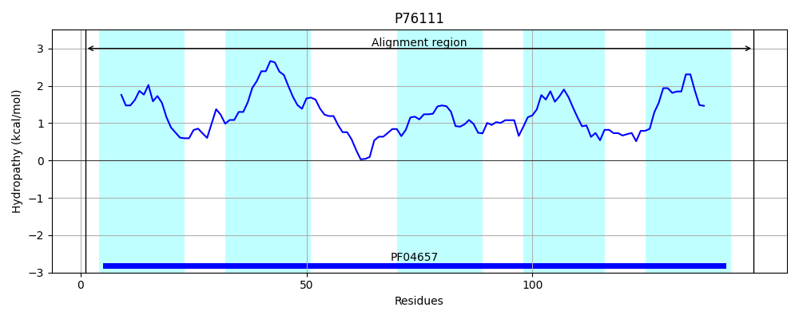
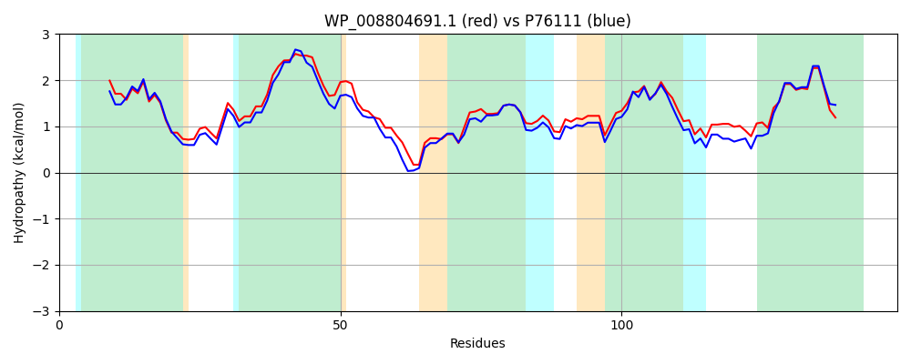

Hit Accession: P76111
Hit TCID: 2.A.7.21.2
Hit Description: gnl|BL_ORD_ID|11437 gnl|TC-DB|P76111|2.A.7.21.2 Inner membrane protein ydcZ - Escherichia coli.
Mach Len: 149
e:0.000000
Query TMS Count : 5
Hit TMS Count: 5
TMS-Overlap Score: 4.400000
Predicted Substrates:None
BLAST Alignment:
Score: 614 , Bit scores: 241 bits, E-value: 2.3e-83, Alignment length: 149, Percentage identity: 80
Query: 1 MNASLTLACLVAAGVGLVVQNTLMVRITQSASTILIAMLLNSLVGIVIFVTMLLLRQGVAGFQELALSVKWWTLIPGLLGSFFVFASISGYQTVGAATTIAVLVASQLVGGLIMDLVRAHGVPVRALIGPVCGAVMLVVGAWLVARRQF 149
MN SLTLA L+AAG+GLVVQNTLMVRITQ++STILIAMLLNSLVGIV+FV++L +QG+AGF EL SV+WWTLIPGLLGSFFVFASISGYQ VGAATTIAVLVASQL+GGL++D+ R+HGVP+RAL GP+CGA++LVVGAWLVARR F
Sbjct: 1 MNQSLTLAFLIAAGIGLVVQNTLMVRITQTSSTILIAMLLNSLVGIVLFVSILWFKQGMAGFGELVSSVRWWTLIPGLLGSFFVFASISGYQNVGAATTIAVLVASQLIGGLMLDIFRSHGVPLRALFGPICGAILLVVGAWLVARRSF 149 | Protein Hydropathy Plots: |
|---|
 |  |
Pairwise Alignment-Hydropathy Plot:
|
|---|
|  |